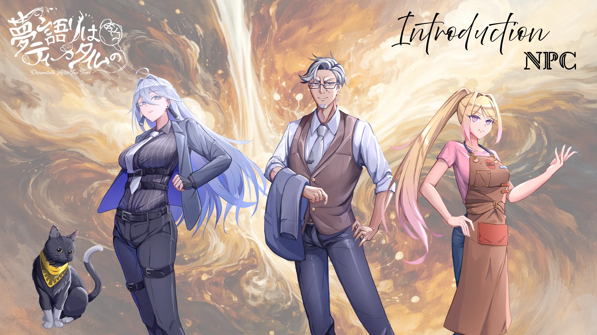
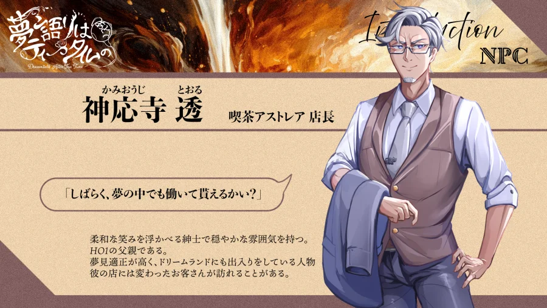
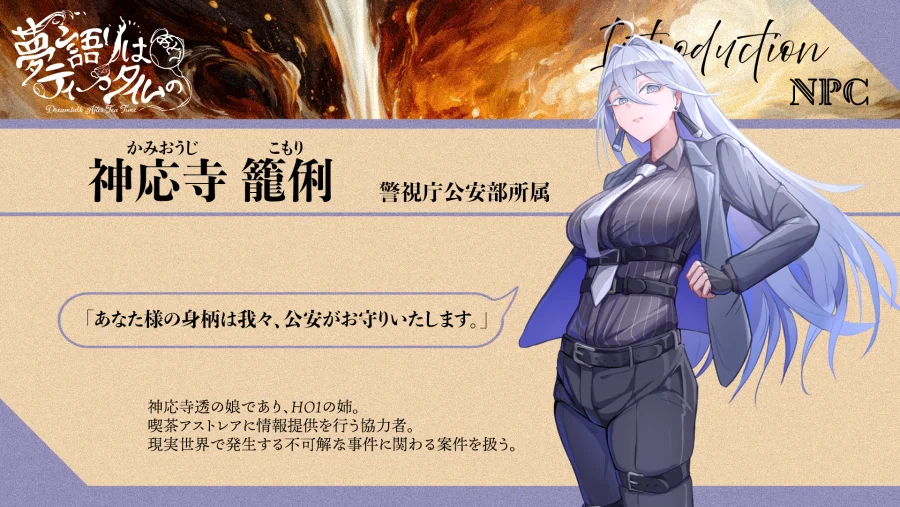
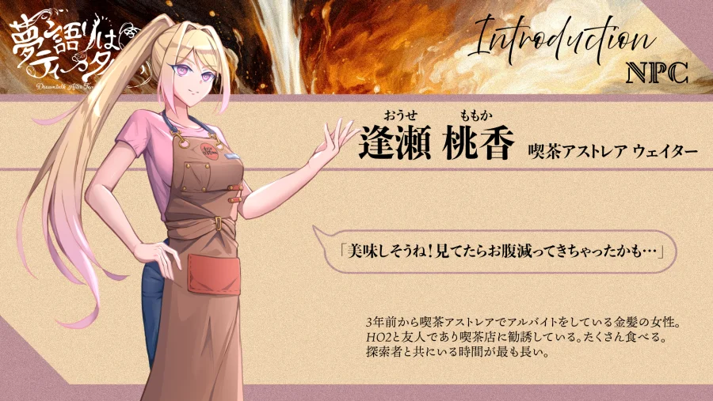
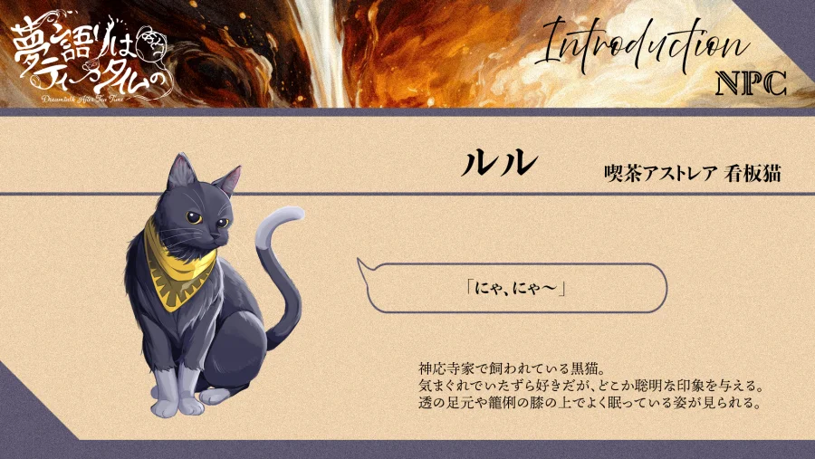
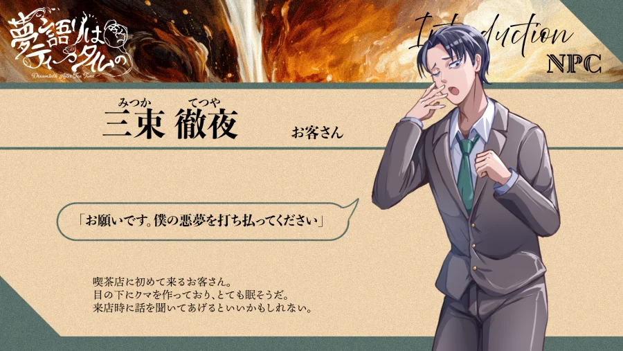

喫茶アストレアで働く人々


かみおうじ とおる
喫茶アストレア店長 ／ 男性(53) ／ 一人称:僕
「やぁ、喫茶店は君たちにかかっているからね。頼んだよ」
柔和な笑みを浮かべる紳士で穏やかな雰囲気を持つ。HO1の父親である。夢見の適性値が高く、これまでもドリームランドにはかなり出入りをしているようだ。相当の人脈があるのか彼の店には、変わったお客さんが訪れることが多い。

かみおうじ こもり
警視庁公安部所属 ／ 女性(28) ／ 一人称:わたくし＝私
「紅茶はいかがでしょう」
神応寺透の娘であり、HO1の姉。喫茶アストレアに情報提供を行う協力者。現実世界で発生する不可解な事件に関わる案件を扱う。ただし、夢見の適性は低く現実面でのサポートが中心になる。紅茶が趣味で、よく淹れる姿が見られる。

おうせ ももか
喫茶アストレア ウェイター ／ 女性(24) ／ 一人称:わたし＝私
「ま、私にかかればこんなもんよね」
3年前から喫茶アストレアでアルバイトをしている金髪の女性。勝気でまっすぐな性格をしている。探索者と共にいる時間が最も長い。HO2と友人であり喫茶店に勧誘している。たくさん食べる。

るる
黒猫(神応寺家の飼い猫)
「ニャー」
神応寺家で飼われている黒猫。気まぐれでいたずら好きだが、どこか聡明な印象を与える。透の足元や籠俐の膝の上でよく眠っている姿が見られる。

みつか てつや
喫茶店に初めて来るお客さん ／ 男性(35) ／ 一人称:僕
「お願いです。僕の悪夢を打ち払ってください」
目の下にクマを作っており、とても眠そうだ。来店時に話を聞いてあげるといいかもしれない。